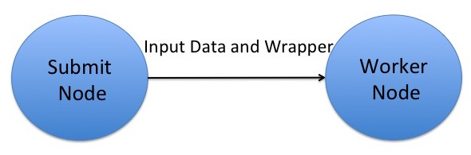

Data Exercise 1.2: transfer_input_files, transfer_output_files, and remaps¶
Exercise Goal¶
The objective of this exercise is to refresh yourself on HTCondor file transfer, to implement file compression, use the knowledge of previous exercise and begin examining the memory and disk space used by your jobs in order to plan larger batches. We will also explore ways to deal with output data.
Setup¶
The executable we'll use in this exercise and later today is the same
blastx executable from previous exercises. Log in to ap40:
$ ssh <USERNAME>@ap40.uw.osg-htc.org
Then change into the blast-data folder that you created in the
previous exercise.
Review: HTCondor File Transfer¶

Recall that OSG does NOT have a shared filesystem! Instead,
HTCondor transfers your executable and input files (specified with
the executable and transfer_input_files submit file arguments,
respectively) to a working directory on the execute point, regardless of
how these files were arranged on the access point. In this exercise we'll
use the same blastx example job that we used previously, but modify
the submit file and test how much memory and disk space it uses on the
execute point.
Start with a test submit file¶
We've started a submit file for you, below, which you'll add to in the remaining steps.
executable =
transfer_input_files =
output = test.out
error = test.err
log = test.log
request_memory =
request_disk =
request_cpus = 1
requirements = (OSGVO_OS_STRING == "RHEL 9")
queue
Implement file compression¶
In our first blast job from the Software exercises (1.1), the database files in the pdbaa directory were all transferred, as is, but we
could instead transfer them as a single, compressed file using tar.
For this version of the job, let's compress our blast database files to send them to the submit node as a single
tar.gz file (otherwise known as a tarball), by following the below steps:
-
Change into the
pdbaadirectory and compress the database files into a single file calledpdbaa_files.tar.gzusing thetarcommand. Note that this file will be different from thepdbaa.tar.gzfile that you used earlier, because it will only contain thepdbaafiles, and not thepdbaadirectory, itself.)Remember, a typical command for creating a tar file is:
user@ap40 $ tar -cvzf <COMPRESSED FILENAME> <LIST OF FILES OR DIRECTORIES>Replacing
<COMPRESSED FILENAME>with the name of the tarball that you would like to create and<LIST OF FILES OR DIRECTORIES>with a space-separated list of files and/or directories that you want inside pdbaa_files.tar.gz. Move the resulting tarball to theblast-datadirectory. -
Create a wrapper script that will first decompress the
pdbaa_files.tar.gzfile, and then run blast.Because this file will now be our new
executablein the submit file, we'll also end up transferring theblastxexecutable binary file withtransfer_input_files. In theblast-datadirectory, create a new file, calledblast_wrapper.sh, with the following contents:#!/bin/bash tar -xzvf pdbaa_files.tar.gz rm pdbaa_files.tar.gz ./blastx -db pdbaa -query mouse.fa -out mouse.fa.resultAlso remember to make the script executable:
chmod +x blast_wrapper.shExtra Files!
The line
rm pdbaa_files.tar.gzremoves the compressed database files that came from our access point. This is important as it prevents thepdbaa_files.tar.gzfile from being transferred back to the submit server at the end of the job. It also reduces the disk space needed on the execute point by removing redundant files we no longer need after the database files have been extracted.
List the executable and input files¶
Make sure to update the submit file with the following:
- Add the new
executable(the wrapper script you created above) - In
transfer_input_files, list theblastxbinary, thepdbaa_files.tar.gzfile, and the input query file.
Commas, commas everywhere!
Remember that transfer_input_files accepts a comma separated list of files, and that you need to list the full
location of the blastx executable (blastx).
There will be no arguments, since the arguments to the blastx command are now captured in the wrapper script.
Predict memory and disk requests from your data¶
Also, think about how much memory and disk to request for this job. Memory requirements can be a little tricky to predict,
since it depends on how much of the database and input files are loaded into memory at once. For well-documented software like blastx,
you can often find this information in the documentation. If you are not sure, we recommend starting with a lower memory request and then
increasing it if the job fails due to insufficient memory in a series of profiling/test runs.
HTCondor has a useful set of submit file commands that allow you to request an initial amount of memory and disk, then increase
it if the job fails due to insufficient resources. You can use the following lines in your submit file to request 1 GB of memory, and then increase it to 2 GB, 4 GB, 8 GB, and 16 GB if the job fails due to insufficient memory:
request_memory = 1 GB
retry_request_memory_increase = RequestMemory * 2
retry_request_memory_max = 16 GB
When considering the memory and disk requirement, think about:
- How much memory
blastxwould use if it loaded all of the database files and the query input file into memory. - How much disk space will be necessary on the execute point for the executable, all input files, and all output files (hint: the log file only exists on the submit node).
- Whether you'd like to request some extra memory or disk space, just in case
Look at the log file for your blastx job from Software exercise (1.1), and compare the memory and disk "Usage" to what you predicted
from the files.
Make sure to update the submit file with more accurate memory and disk requests. You may still want to request slightly
more than the job actually used.
Run the test job¶
Once you have finished editing the submit file, go ahead and submit the job.
It should take a few minutes to complete, and then you can check to make sure that no unwanted files (especially the
pdbaa database files) were copied back at the end of the job.
Run a du -sh on the directory with this job's input.
How does it compare to the directory from Software exercise (1.1), and why?
Stop and Think!
Notice which files were transferred back to the Access Point. Why do you think this is? Consider what files were created on the execute point, and which files were transferred back to the Access Point. How does this relate to the transfer_input_files and transfer_output_files submit file attributes?
Also consider how our job's disk usage compares to the requested amount by reviewing the test.log file. Are the requested amounts reasonable? If not, what would you change? How do you think this would affect the throughput on the system?
transfer_output_files¶
So far, we have used HTCondor's new file detection to transfer back
the newly created files. In our previous submission, we received back
our pdbaa* files, as these were extracted on the EPs top-level directory
and considered new/changed compared to the AP's submit directory. An alternative
is to be explicit, using the transfer_output_files attribute in the submit file.
The upside to this approach is that you can pick to only transfer back a subset of the
created files. The downside is that you have to know which files are created.
Modify the submit file from the previous
example, and add a line like (remember, before the queue):
transfer_output_files = mouse.fa.result
In your blast-data directory, remove the following files,
$ rm pdbaa.00.* pdbaa.pal test.* mouse.fa.result
Submit the job again, and make sure everything works. Did you get
any pdbaa.* files back? What files did you get back? How does this compare to the previous submission?
The next thing we should try is to see what happens if the
file we specify does not exist. Modify your submit file,
and change the transfer_output_files to:
transfer_output_files = elephant.fa.result
Submit the job and see how it behaves. Did it finish successfully?
transfer_output_remaps¶
Related to transfer_output_files is transfer_output_remaps,
which allows us to rename outputs, or map the outputs to
a different storage system (will be explored in the next
module).
The format of the transfer_output_remaps attribute is a
list of remaps, each remap taking the form of src=dst.
The destination can be a local path, or a URL. For example:
transfer_output_remaps = "myresults.dat = s3://destination-server.com/myresults.dat"
If you have more than one remap, you can separate them with
;
By now, your blast-data directory is probably starting
to look messy with a mix of submit files, input data,
log file and output data all intermingled. One improvement
could be to map our outputs to a separate directory. Create
a new directory named science-results.
Add a transfer_output_remaps line to the submit file.
It is common to place this line right after the
transfer_output_files line. Change the
transfer_output_files back to mouse.fa.result.
Example:
transfer_output_files = mouse.fa.result
transfer_output_remaps =
Fill out the remap line, mapping mouse.fa.result to the
destination science-results/mouse.fa.result. Remember
that the transfer_output_remaps value requires double
quotes around it.
Submit the job, and wait for it to complete. Are there any errors? Can you find mouse.fa.result?
Renaming outputs on the fly!
The transfer_output_remaps attribute is very useful for renaming outputs on the fly. A common use-case is if you have a script that runs multiple times but always produces the same output filename, you can use transfer_output_remaps to rename the output file to something unique for each run. For example, let's say your blast_wrapper.sh script always produces a file called results.dat but you ran it for a mouse, horse, and elephant query sequence. If you run this script multiple times, each run will overwrite the previous results.dat file. To avoid this, you can use transfer_output_remaps to rename the output file to something unique for each run (such as the species or another job-specific variable in your submit file).
Exercise: Build Your Own Submit File¶
You've now assembled every piece of this job's submit file. Fill in the blanks below to
match the steps above, then check your work. Your request_memory and request_disk
values are judgment calls, so there's no single right number for those.
You've now built every piece of this job's submit file. Fill in the highlighted
values to match the steps above, then press Check submit file. The
greyed-out lines are already filled in for you. request_memory and
request_disk are judgment calls — there is no single right number,
so those are just checked for a sensible value with a unit.
Conclusions¶
In this exercise, you:
- Used your data requirements knowledge from the previous exercise to write a job.
- Executed the job on a remote worker node and took note of the data usage.
- Used
transfer_input_filesto transfer inputs - Used
transfer_output_filesto transfer outputs - Used
transfer_output_remapsto map outputs to a different destination
When you've completed the above, continue with the next exercise.